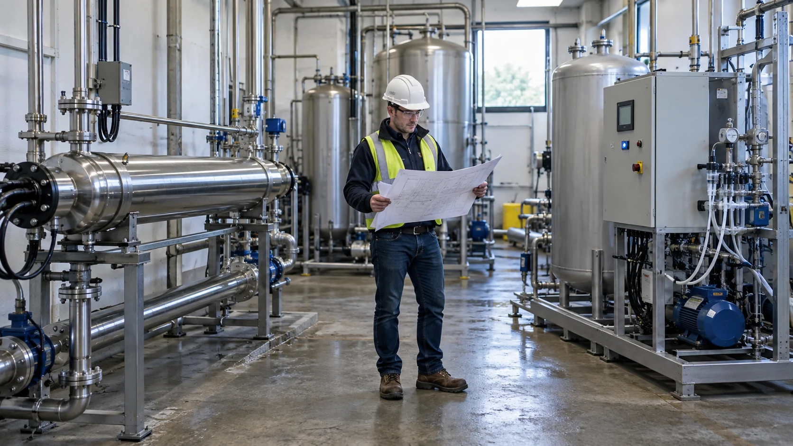
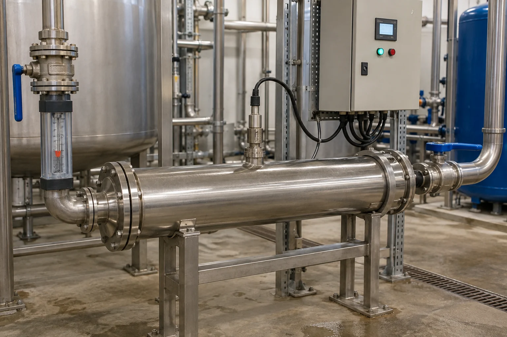
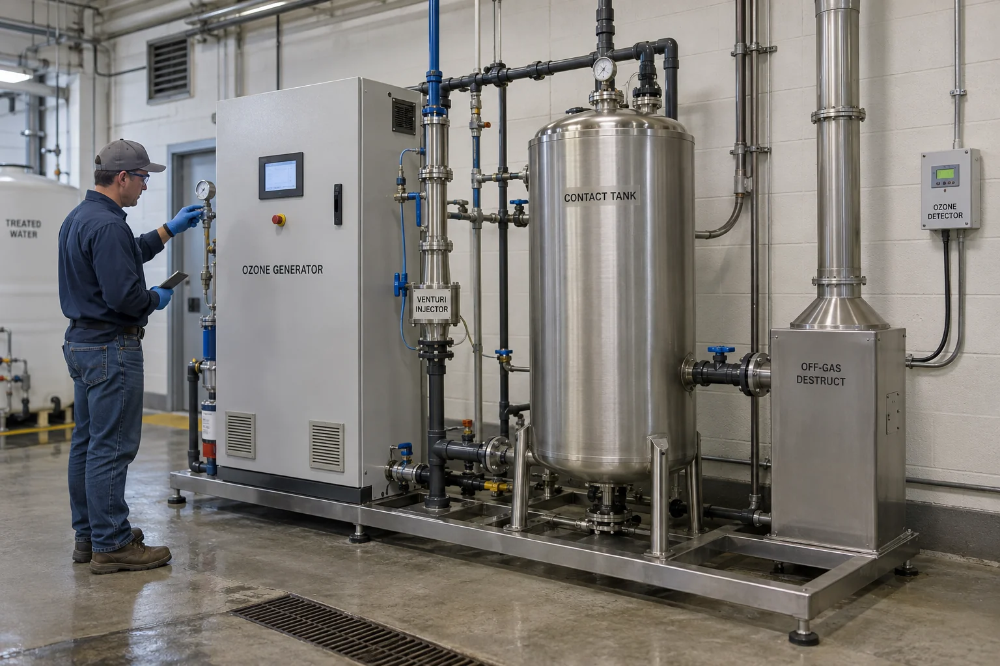

UV or Ozone? The Water-Treatment Differences Buyers Need to Know
Disinfection, oxidation, residuals, byproducts, maintenance and cost — the differences buyers need to know before choosing UV or ozone
Ask an Engineering Question ↗
UV or ozone — which water-treatment route fits the project?
Short answer: If the main problem is microorganisms and the water is reasonably clear, UV is often the simpler option. If the project must also oxidize certain odor compounds, color, iron, manganese or organic contaminants, ozone may be more suitable.
Neither technology is universally better. UV performance depends on how well UV light passes through the water and on the actual flow rate. Ozone requires the correct dose, effective gas-to-water transfer and enough contact time, as well as safe destruction of unused ozone gas.
On this page
- What is the simplest way to understand UV and ozone?
- Ozone has a residual. Does that mean it protects longer than UV?
- Why is ozone common in bottled-water plants?
- Will ozone always solve a taste or odor problem?
- Do UV and ozone create treatment byproducts?
- Can UV and ozone be used together?
- Which technology fits each application?
- Which option costs less?
- Seven RFQ questions for buyers
- Frequently asked questions
What is the simplest way to understand UV and ozone?
Think of them this way:
- UV is an irradiation checkpoint. Water receives UV exposure while it passes through the reactor. UV does not remain in the water afterward.
- Ozone is a strong oxidant generated on site. Ozone gas is dissolved into the water so that it can react with microorganisms and oxidizable compounds.
| What the buyer wants to know | UV | Ozone |
|---|---|---|
| Main purpose | Microbial inactivation | Disinfection plus selected oxidation, decolorization or odor control |
| Is anything dosed into the water? | No chemical disinfectant is dosed | Ozone gas must be transferred into the water |
| Does protection continue downstream? | No disinfectant residual | A short-lived process residual is possible, but ozone decays and is not persistent protection |
| Main equipment | UV reactor, lamps, quartz sleeves and sensors | Ozone generator, gas preparation, injector, contact tank and off-gas destruction |
| Main limitations | Low UV transmittance, excessive flow or sleeve fouling can reduce delivered dose | Gas leakage, material compatibility and bromate formation in bromide-containing water |
| Routine maintenance | Replace lamps, clean sleeves and calibrate sensors | Maintain the generator, gas line, injector, off-gas unit and ambient monitoring |

Ozone has a residual. Does that mean it protects longer than UV?
Ozone can be measured as a residual in a contact tank or during loop sanitization, but that residual continues to decay. It should not be treated like a persistent chlorine residual that can be maintained throughout a long distribution system.
A more accurate interpretation is: during treatment, the operator can measure how much dissolved ozone remains and use that information to confirm that the intended contact conditions are being achieved. It does not mean that one ozone dose will protect a storage tank or sealed bottle for weeks or months.
If the project has a large tank, long piping or extended storage, choosing between UV and ozone is only part of the decision. Also consider:
- Tank sealing and hygiene;
- Water age and circulation;
- Stagnant branches and dead legs;
- Whether local rules or the risk assessment require a persistent disinfectant residual.
Why is ozone common in bottled-water plants?
The US FDA notes that bottled-water producers commonly use ozone instead of chlorine for disinfection, partly because chlorine can leave an unwanted taste or odor.
Ozone is well suited to process disinfection around the filling stage and can support control of water-contact areas in the filling operation. It is not a preservative that remains active inside the bottle for its full shelf life. Product stability still depends on source-water control, equipment hygiene, bottle and cap sanitation, the filling environment and seal integrity.
Bromate is an important concern. If bromide is present in the source water, ozone can convert some of it into bromate. The WHO provisional guideline value for drinking water and the US FDA allowable level for bottled water are both 0.010 mg/L, or 10 μg/L.
For the buyer, the practical first step is simple: test bromide before selecting ozone, and ask the supplier how bromate formation will be controlled and monitored.

Will ozone always solve a taste or odor problem?
No. First identify what the odor is and where it begins.
Ozone can oxidize many odor and color compounds and may also treat iron, manganese and sulfide under suitable conditions. It is not the best solution for every odor:
- Activated carbon may be better for adsorbing some organic compounds;
- Aeration may be more suitable for some volatile gases;
- Exhausted filter media, tank contamination or unsuitable materials should be corrected at the source;
- Conventional UV is primarily a disinfection process and normally does not provide meaningful odor removal.
Be cautious if a supplier promises that ozone will remove any odor without asking about the compound, pH, organic load and required contact time.
Do UV and ozone create treatment byproducts?
For ozone, the best-known concern is bromate formation in bromide-containing water. Ozone can also transform organic matter into other oxidation products. An ozone design should therefore evaluate treated-water chemistry, not only microbial inactivation.
UV does not require the addition of a chemical disinfectant, but “zero byproducts under all conditions” is still too broad a claim. If chlorine, chloramine, ozone or other reactive compounds are already present, UV can change some downstream chemistry. When UV is combined with other oxidants, assess the complete treatment train rather than the UV reactor alone.
Can UV and ozone be used together?
Yes. Common reasons include:
- Ozone first treats selected color, odor or organic compounds, followed by UV as a final microbial barrier;
- Ozone sanitizes a purified-water loop and a downstream treatment step reduces residual ozone before use;
- UV and ozone form a purpose-designed advanced oxidation process for selected difficult organic contaminants.
Simply connecting two units does not automatically create an effective advanced oxidation process. The design still needs ozone dose, mass transfer, contact time, UV dose and contaminant-specific reaction data.
Which technology fits each application?
| Application | Common starting point | Why |
|---|---|---|
| RO product water used immediately | UV | Water is usually clear and the main objective is microbial control |
| Food and beverage process water | UV is common | No oxidant needs to be added, although downstream piping still requires hygienic control |
| Bottled-water filling | Ozone is common; UV may also be used | Ozone suits filling-stage disinfection and avoids chlorine taste, but bromate must be controlled |
| Water with color, sulfide or a defined odor compound | Ozone or another oxidation process | Ozone adds oxidation, but the contaminant must be identified first |
| Long storage or a long distribution line | Neither UV nor one-time ozone treatment is enough by itself | Water age, hygiene and persistent residual protection may also be required |
| Recirculating aquaculture | UV for microbial control; ozone for additional oxidation | Excess ozone residual can harm stock, so control requirements are higher |
| Commercial pools | UV or ozone as secondary treatment | Neither replaces the required chlorine or bromine residual in the pool |
| Difficult organic micropollutants | Purpose-designed advanced oxidation | Testing and calculation are required; a standard unit cannot simply be relabeled as AOP |
Which option costs less?
There is no fixed answer.
A UV system is often mechanically simpler, but the budget should include power, lamps, quartz-sleeve cleaning, sensors and spare parts. An ozone system may require oxygen preparation, injectors, a contact tank, off-gas destruction, leak monitoring and ventilation in addition to the generator.
Ask competing suppliers to quote on the same basis:
- Equipment and installation;
- Annual energy use;
- Annual consumables and spare parts;
- Routine labor requirements;
- Expected shutdown time for maintenance;
- Instrument calibration costs;
- Estimated three- to five-year ownership cost;
- Water-quality and flow conditions under which the performance commitment applies.
Seven RFQ questions for buyers
- Is the project only about disinfection, or must it also treat odor, color, iron, manganese or organics?
- What water analysis and maximum flow were used for sizing?
- Did the UV selection use the actual UV transmittance?
- Does the ozone design include dose, transfer efficiency and contact time?
- Is bromide present, and how will bromate be controlled?
- What alarms, interlocks and safe-shutdown functions are included?
- Does the quotation include sensors, off-gas treatment, spare parts and ongoing maintenance?
KONCHE supplies both UV and ozone equipment, so the treatment route should follow the water quality and application rather than a predetermined product choice. UV selection needs flow, UV transmittance and target dose. Ozone selection needs water chemistry, dose and contact conditions. A fixed inactivation or treatment claim should not be made when these inputs are missing.
Frequently asked questions
Which is the stronger disinfectant: UV or ozone?
“Stronger” is not a useful stand-alone comparison. Microorganisms respond differently to each process, and equipment design, water quality and operating conditions affect the result. Compare validated performance against the actual target organism and design conditions.
Is chlorine still needed after ozone?
If water enters a long distribution system, or if the applicable rules require a persistent residual, a separate approved residual-disinfection measure is generally needed.
Does UV change the taste of water?
Conventional UV disinfection is not normally used for taste or odor removal. If the water has an odor, identify the cause first.
Can ozone be used when bromide is present?
It is not automatically prohibited, but bromate risk must be evaluated, controlled and monitored against the applicable limit.
Is a UV–ozone combination always better?
No. A combined system adds energy use, control points and byproduct assessment. It is most useful when the project has a clear need for both disinfection and oxidation.
Recommended for this application
Related KONCHE systems and guides for the duties discussed in this article:
254 nm sterilizers for recirculation and point-of-use duty, 0.25–50 m³/h.
View ↗MEDIUM-PRESSURE UVMedium-Pressure UV System2–10 kW broad-spectrum lamps for high-flow and demanding duties.
View ↗OZONEOzone Disinfection SystemOzone generation, mass transfer and off-gas treatment, 1–200 g/h.
View ↗ARTICLERO Storage-Tank RegrowthWhy bacteria return after RO water enters storage.
View ↗ARTICLEHow to Size a UV SystemThe four inputs that control UV sizing.
View ↗ARTICLEUV Water Treatment SystemsSystem types, applications and lifecycle cost.
View ↗Let the water
decide the route.
Send your water analysis, flow and treatment objective. KONCHE supplies both UV and ozone equipment and will state what each can and cannot achieve for your duty.
Get Expert Support →